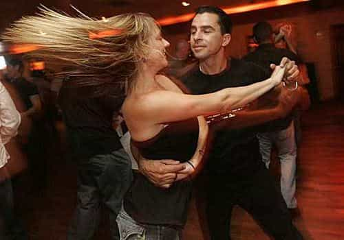
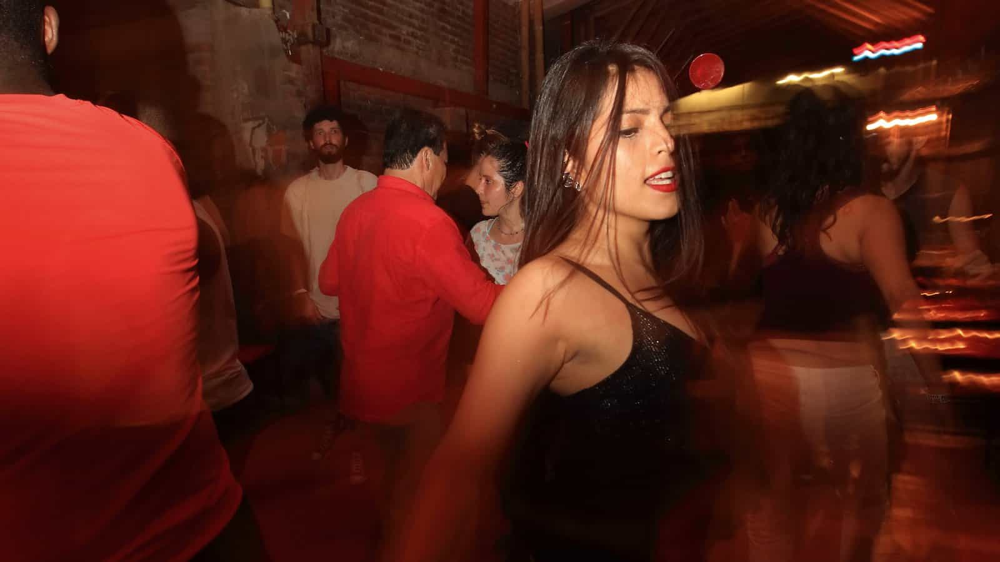
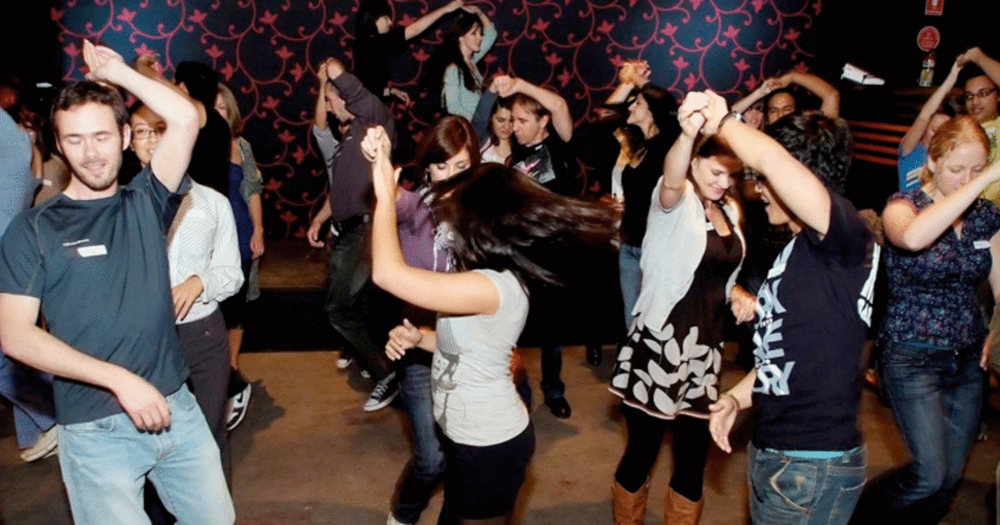

An man of modest standing with a penchant for the problematic. His magnum opus will be describing the relationship between the cryptocurrency and sexual marketplaces. Until then, we will have to settle for centralised control of the crimson arts.


Average to hot women have it easy. Everywhere they go, men flock to them, offering to lift heavy things, buy them dinner, show them around town, laugh at their unfunny jokes, like their excruciatingly trivial Facebook posts, and tell them what unique and extra special snowflakes they are.
The men that do this are called orbiters, and these luckless yet useful idiots, although never successful in their hidden agenda to bed or romantically entangle themselves with the fair maiden, do cause one massive unintended consequence. What they do is so inflate women’s self-esteem with their constant moist, nearly teary affirmations of her demigod status that they begin to believe it.
“Yes, I really am an extra special snowflake! Good things always come my way. I demand only the best, because I’m worth it!”
Yes, m’dear, of course.
Then for some reason, these snowflakes come to a salsa class, and poof! Where has all the attention gone?
She is still smokin’ hot, but so are many other girls there. More importantly, since she is a beginner, she literally can bring nothing more to the table other than her looks. And although men will still dance with her, she can command nowhere near the attention she otherwise would in a generic club or bar setting. Her snowflake status is melted, like the snows of yesteryear, gone from this earth.
In a way, salsa is more “feminist” than many might first think. Women in salsa of all ages are valued primarily for their skill, not merely looking good and swaying to the beat with iPhone in hand. It is, in a sense, a meritocracy of movement and rhythm.

The men—certainly the better men—will have plenty of women willing to dance with them, and simply do not have time for snowflake worship. The less talented men, only starting in their salsa careers, might fawn upon ladies that are also beginners, but sadly, beginner men are totally invisible and irrelevant to women, and their male attention—springing forth as it does from a bottomless well of loserdom—isn’t worth much anyway.
What woman wants the attention of an excruciatingly mediocre and uncoordinated dude? Only women on the lowest rungs of the social ladder, that’s who, and even then…
Fortunately (or perhaps hubristically) for women, their ability in dance is frontloaded: a little goes a long way, and initial progress is indeed swift. Soon, they can ascend to the lofty and rarefied airs of the intermediate dancers. But this requires a level of dedication and practice to achieve. It is surely a shorter trip to the “inters” than for a man, but one worth taking.

I have seen ladies attend salsa as beginners, often in a group of friends, none of whom would be ignored in a bar or nightclub in the normie world. The ignominious and embarrassing juxtaposition of being attractive yet receiving very much suboptimal levels of attention ensures they do not return. Only the women who have a desire to learn and an appreciation for dance can break through this wall of narcissistic dark space.
The conclusion, therefore, is that those who do remain are well-filtered, usually of some intellect and depth, and not the kind to rely on their looks to coast through life. This is the reason that the women of any salsa scene are as good a place as any for a man to seek a companion of equal capability in life.
Let me mansplain you something: dance is the great inverter of intergender relations. An ugly man can transcend his shortcomings and become a man of considerable attractiveness with diligent practice and the requisite flavour on the dance floor. An attractive but talentless or vapid woman will be unable to draw attention of the magnitude she is used to in civvy street.
Both of these re-adjustments are equal in value and opposite in direction, effectively cancelling each other out like matter and antimatter. This restores balance to the universe.
This has profound implications in society. If more men learned to dance, it would decrease female entitlement, narcissism, and self-involvement. If more men learned to dance, it would knock many women from the pedestal they occupy. The ladies of this world could no longer merely command male attention by showing up; they would need to be able to dance or develop a personality.
Nor would cries of sexism or patriarchal oppression hold any water, because a dancer can either dance or not. There are no lies on the dance floor. It actually holds women to the same standards as men: ability and competence, which is why modern feminism (with its focus on privilege and victimhood) and salsa are largely incompatible.
This may seem like a harsh assessment, but only at a superficial glance. Those who stick with and prosper in the salsa scene are worthy of respect. The world is too full of people who claim to be proficient but are merely smoke and mirror practitioners with little substance behind their claims.
Dance, and partner dance in particular—such as salsa—is one of the few places where looks don’t matter (so much), background doesn’t matter, who you are doesn’t matter, and showing up expecting to be treated above anyone else just because your waist-hip ratio is in an optimal range doesn’t count for much either.
It’s fair, but not equal. It’s a free market of talent where you are limited only by your ability and effort regardless of gender, and there can be no redistribution of skill. It is a scene where men of depth and ability can prosper.

What does a man who has taken these words to heart do? As with anything, be the contextual alpha: be the top ten percent of dancers in your own scene. It is obviously easier to be a big fish in a small pond, but the bigger the pond, the better the fish, so scale your efforts and lesson expenses to your desires, natural ability and local environment. Traveling abroad to congresses are a great way to learn in an anonymous environment.
But I would stress not using dance as a pick up joint per se, but rather as a school where one learns human relationship dynamics in a natural way. All of human intergender dynamics are there to be seen, and if a man attends with his eyes open and a strong knowledge of game, he can learn as much as he needs.
But primarily, due to the filtering effect of the meritocracy of the dance, it is a good place to seek non-SJW converged, non-permanently offended snowflakes. It is the hidden motherlode of red-pilled women who want men to lead and are happy to be led, both physically in the dance and elsewhere in life. So, go find some lessons, listen to the salsa music to get the rhythm, and invest the time needed to divest yourself of your two left feet. The rewards are there for any man who can get it.
Read More: Why Men Should Take Up Cross Body Style Salsa Dancing